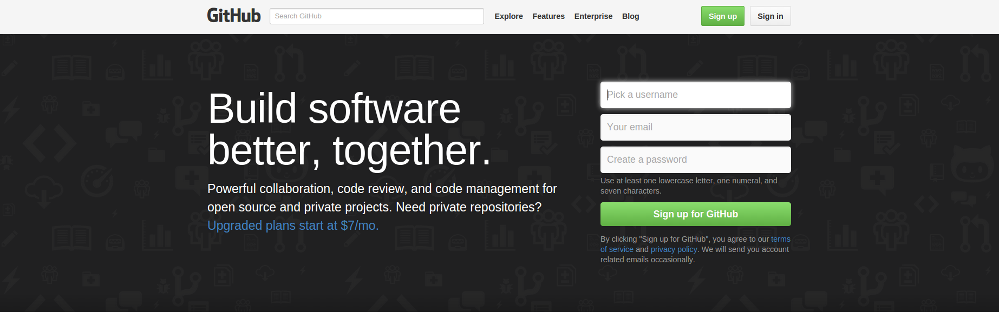
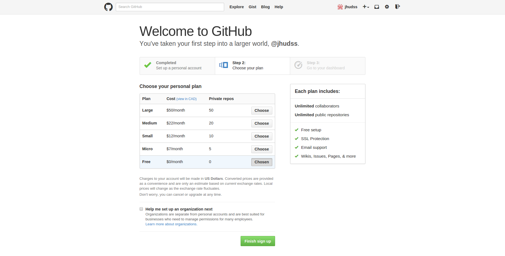
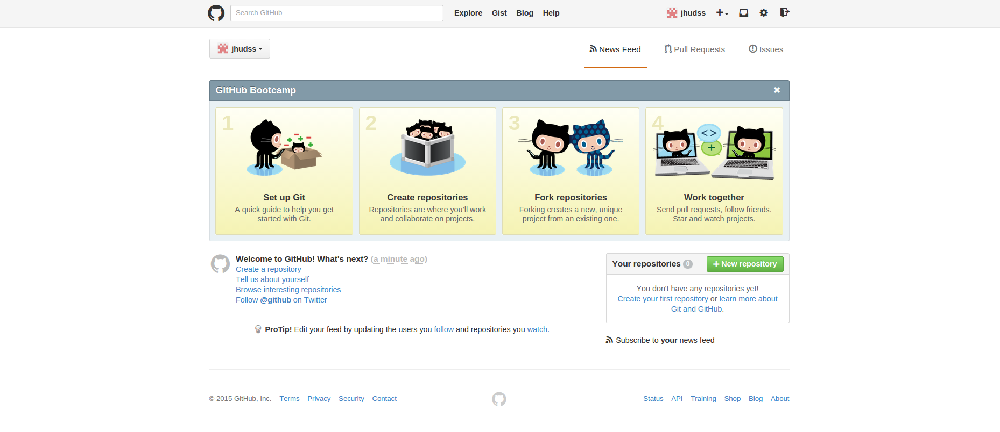

RStudio provides seamless integration with the file system to navigate and manipulate files, the version control system to manage and synchronise local and remote source code repositories, and the statistical computation and software development envrionment. However, becoming comfortable with the command line will improve our productivity as data analysis projects increase in sophistication and work-flow automation arises.
Git is a distributed version control system allowing any number of people to collaboratively contribute to software development or other projects.
Let's start exploring basic local and remote repository management at the command-line. Open a web browser tab and type 'http://127.0.0.1:8000' to access a terminal session. The user name and password are provided in the Toolbox for Tools tutorial. By learning a few basic commands to manage a repository we will feel more at ease and understand what is going on behind the scenes when using RStudio.
| Command | Description | Common Flags | Arguments |
|---|---|---|---|
| git init | initialise a local repository; default is current working directory |
||
| git branch | determine the current branch | ||
| git checkout | create a new branch in the current repository change to another branch |
-b new_branch | branch_name (mandatory) |
| git add | add files to the local repository | -A (add) -u (track file name changes and deletions) |
[directory_path/][file_name] (mandatory) |
| git commit | commit any changes the local repository | -a (add) -m "message" |
[directory_path/][file_name] "a string of characters" (optional, mandatory) |
| git pull | fetch changes from another repository and merge with current repository | source target (mandatory) |
|
| git push | update remote repository with changes from the local repository | -u (add upstream (tracking) reference) | target source (mandatory unless -u flag present) |
| git status | reports the status of the local repository | ||
| git show | eports the historical differences of the files in the local repository |
||
| git merge | flatten commit history before merging source branch with target branch | --squash | branch_name (mandatory) |
| Arguments in brackets are optional but if the 'mandatory' designation is present, at least one of the arguments must be supplied. | |||
For each of the examples in this section type the commands to the right of the command prompt ($) to interactively follow along these examples. Take your time working through the commands until you fully understand why each command produces the observed results.
Preliminaries: Configure your email address and username to be used by Git. The flag --global means apply the configuration to all of your Git repositories on the computer. The flag --local means apply the confoguration to only the current Git repository.
$ git config [--local | --global] user.email "userid@domain.tld"
$ git config [--local | --global] user.name "username"
Exercise 1:
Create a local repository.
$ mkdir data/sample
$ cd data/sample
$ pwd
/home/dst/data/sample
$ git init
Initialized empty Git repository in /home/dst/data/sample/.git/
$ ls -la
drwxrwxr-x 3 dst dst 4096 Jan 13 19:07 .
drwxrwxr-x 3 dst dst 4096 Jan 13 19:07 ..
drwxrwxr-x 7 dst dst 4096 Apr 5 19:09 .git
Exercise 2:
Create an empty README.md file in the local repository.
$ touch README.md
$ git add .
$ git commit -m "initial commit"
[master (root-commit) b7c48f3] initial commit
1 file changed, 0 insertions(+), 0 deletions(-)
create mode 100644 README.md
$ git status
On branch master
nothing to commit, working directory clean
$ git show
commit b7c48f3e5cdc772e6a198c3633acd853a69a5778
Author: gdhorne <nomail@mail.com>
Date: Wed Jan 13 19:21:21 2016 -0400
initial commit
diff --git a/README.md b/README.md
new file mode 100644
index 0000000..e69de29
Exercise 3:
Edit the README.md file and type the following markdown into the file.
Markdown:
* Avro * Harrier * Hornet
$ nano README.md
Update the local repository's tracking database.
$ git add -A .
$ git commit -m "military aircraft"
[master 8fd8eb8] added content
1 file changed, 3 insertions(+)
Exercise 4:
Edit the README.md file by adding '* Raptor' and changing 'Avro' to 'Avro Arrow'.
$ nano README.md
Update the local repository's tracking database.
$ git add .
$ git commit -m "added Raptor and changed Arrow"
[master 87d0125] added Raptor
1 file changed, 2 insertions(+), 1 deletion(-)
Exercise 5:
Determine whether there are any uncommitted changes.
$ git status
On branch master
nothing to commit, working directory clean
$ git show
commit 87d012594aa5a8a39e99d4728dc8c853779587ab
Author: gdhorne <nomail@mail.com>
Date: Wed Jan 13 19:22:51 2016 -0400
added Raptor and changed Arrow
diff --git a/README.md b/README.md
index 354fa34..8290523 100644
--- a/README.md
+++ b/README.md
@@ -1,3 +1,4 @@
-* Avro
+* Avro Arrow
* Harrier
* Hornet
+* Raptor
Exercise 6:
Add a new branch 'aircraft' to the local repository and make it the active branch.
$ git checkout -b aircraft
Switched to a new branch 'aircraft'
$ git status
On branch aircraft
nothing to commit, working directory clean
Exercise 7:
Merge the contents of the 'master' branch with the 'aircraft' branch.
$ git merge master
Already up-to-date.
Exercise 8:
Switch to the 'master' branch.
$ git checkout master
Switched to branch 'master'
$ git status
On branch master
nothing to commit, working directory clean
GitHub is a repository hosting service supporting the Git distributed version control system which facilitates collaboration between any number of people. Throughout this boot-camp there will be ample opportunity to gain hands-on experience with local and remote repository management. Additionally, some of the Data Science Specialization courses require learners to submit their programming assignments via GitHub as part of a peer assessment grading process.
 Figure 1 Create an account with GitHub
Before creating a repository on GitHub you must create an account preferably with the same name email address used when configuring Git. If you use an alternate email address and username for your GitHub account, you can associate the username and email address with this account.
 Figure 2 Choose a Personal Plan
Select the repository hosting plan for your account. The default free plan is sufficient for peer assessments during the Johns Hopkins University [Data Science Specialization[1000]].
 Figure 3 New Account Orientation Dashboard
After your GitHub account is set-up you are ready to explore the service. You should update the profile information at the very least before proceeding.
Exercise 9:
Synchronise a local repository with an empty remote repository of the same name on GitHub.
Command Line Junkies Only
These commands create an empty repository 'sample' on GitHub and push the content of the local repository to your GitHiub account. Substitute your GitHub account name for 'user_name' and type your account password when prompted.
$ curl -u user_name https://api.github.com/user/repos \
-d "{\"name\":\"sample\",\"description\":\"military aircraft\"}"
Enter host password for user 'gdhorne':
The repository transaction record shows the type of information tracked by GitHub. This data can be queried via the GitHub Developer API.
Everyone Else
Create an empty repository on GitHub using the website.
Command Line Junkies and Everyone Else Reunite
$ git remote add origin https://github.com/user_name/sample.git
$ git push origin master
Username for 'https://github.com': gdhorne
Password for 'https://gdhorne@github.com':
Counting objects: 9, done.
Delta compression using up to 2 threads.
Compressing objects: 100% (3/3), done.
Writing objects: 100% (9/9), 681 bytes | 0 bytes/s, done.
Total 9 (delta 0), reused 0 (delta 0)
To https://github.com/gdhorne/sample.git
* [new branch] master -> master
The .git extension in the repository name is optional.
When you check the GitHub repository 'sample' there is no branch named 'aircraft'. This demonstrates that pushing from the local repository to a remote repository only applies to the currently active repository branch or the explicitly named branch as in this example. If you want to push the aircraft branch to GitHub,
$ git push origin aircraft
Username for 'https://github.com': gdhorne
Password for 'https://gdhorne@github.com':
Total 0 (delta 0), reused 0 (delta 0)
To https://github.com/gdhorne/sample.git
* [new branch] aircraft -> aircraft
Consequently, it is possible to have branches in the local repository which never appear in the remote repository.
Exercise 10:
Clone an existing repository from GitHub.
$ git clone https://github.com/user_name/sample
If a subdirectory within the current working directory has the same name as the repository, an error message is displayed and the repository cloning fails.
A cheatsheet for Git and GitHub has been prepared by the folks at GitHub.